건축기사 (2014-09-20 기출문제)
1과목: 건축계획
1. 사무실 건축의 실단위 계획에 있어서 개방식 배치(Open Plan)에 관한 설명으로 옳지 않은 것은?
- 독립성과 쾌적감 확보에 유리하다.
- 공사비가 개실시스템보다 저렴하다.
- 방의 길이나 깊이에 변화를 줄 수 있다.
- 전면적을 유효하게 이용할 수 있어 공단 절약상 유리하다.
(정답률: 86%)

2. 캐빈 리치(Kevin Lynch)가 주장한 “도시 이미지”의 구성요소에 속하지 않는 것은?
- Paths
- Edges
- Linkages
- Landmarks
(정답률: 78%)
3. 주택의 부엌 작업대 배치유형 중 ㄷ자형에 관한 설명으로 옳은 것은?
- 두 벽면을 따라 작업이 전개되는 전통적인 형태이다.
- 평면계획상 외부로 통하는 출입구의 설치가 곤란하다.
- 작업동선이 길고 조리면적은 좁지만 다수의 인원이 함께 작업할 수 있다.
- 가장 간결하고 기본적인 설계형태로 길이가 4.5m 이상이 되면 동선이 비효율적이다.
(정답률: 78%)
4. 사무소 건축에서 유효율(rentable ratio)이 의미하는 것은?
- 연면적에 대한 대실면적의 비율
- 건축면적에 대한 대실면적의 비율
- 대지면적에 대한 대실면적의 비율
- 기준층 면적에 대한 대실면적의 비율
(정답률: 73%)
5. 고층건물의 스모크 타워(Smoke Tower)에 관한 설명으로 옳은 것은?
- 보일러실의 굴뚝의 보조설비이다.
- 화재시 연기를 배출시키기 위하여 설치한다.
- 쿨링타워의 보조설비로서 옥상층에 설치한다.
- 주방조리대 상부에 설치하여 냄새, 연기, 수증기 등을 흡출하는 설비이다.
(정답률: 80%)
6. 포스트모더니즘의 전축가로 “건축의 복합성과 대립성(Complexity and Contradiction in Architecture)"이라는 저서를 쓴 건축가는?
- 다니엘 번함
- 조셉 팍스턴
- 로버트 벤츄리
- 피터 아이젠만
(정답률: 74%)
7. 극장건축의 관련 제실에 관한 설명으로 옳지 않은 것은?
- 앤티 룸(anti room)은 출연자들이 출연 바로 직전에 기다리는 공간이다.
- 그린 룸(green room)은 출연자 대기실을 말하며 주로 무대 가까운 곳에 배치한다.
- 배경제작실의 위치는 무대에 가까울수록 편리하며, 제작 중의 소음을 고려하여 차음설비가 요구된다.
- 의상실은 실의 크기가 1인당 최고 8m2이 필요하며, 그린룸이 있는 경우 무대와 동일한 층에 배치하여야 한다.
(정답률: 79%)
8. 기업체가 자사제품의 홍보, 판매 촉진 등을 위해 제품 및 기업에 관한 자료를 소비자들에게 직접 호소하여 제품의 우위성을 인식시키는 전시공간은?
- 쇼룸
- 런드리
- 프로세니움
- 인포메이션
(정답률: 87%)
9. 아파트의 평면형식에 관한 설명으로 옳지 않은 것은?
- 집중형은 대지의 이용률이 높다.
- 편복도형은 각 세대의 거주성이 균일한 배치구성이 가능한 유형이다.
- 계단실형은 각 세대가 양쪽으로 개구부를 계획할 수 있는 관계로 통풍이 양호하다.
- 중복도형은 엘리베이터를 공동으로 사용하는 주호의 한정으로 인하여 고층형에는 불리하다.
(정답률: 71%)
10. 학교건축의 배치계획 중 분산병렬형에 관한 설명으로 옳지 않은 것은?
- 일종의 핑거 플랜이다.
- 넓은 부지를 필요로 한다.
- 일조ㆍ통풍 등 교실의 환경 조건이 불균등하다.
- 구조계획이 간단하고 규격형의 이용도 편리하다.
(정답률: 82%)
11. 공연장의 객석 계획에서 잘 보이는 동시에 실제적으로 관객을 수용해야 하는 공연장에서 큰 무리가 없는 거리인 제1차 허용거리의 한도는?
- 15m
- 22m
- 38m
- 52m
(정답률: 77%)
12. 상점 매장의 가구배치에 따른 평면 유형에 관한 설명으로 옳지 않은 것은?
- 직렬형은 부분별로 상품 진열이 용이하다.
- 굴절형은 대면판매 방식만 가능한 유형이다.
- 환상형은 대면판매와 측면판매 방식을 병행할 수 있다.
- 복합형은 서점, 패션점, 악세사리점 등의 상점에 적용이 가능하다.
(정답률: 83%)
13. 고려시대 주심포 양식에 관한 설명으로 옳지 않은 것은?
- 우미량을 사용하였다.
- 기둥 위에만 공포가 배치되었다.
- 소로는 비교적 자유스럽게 배치되었다.
- 기둥 위에 창방과 평방을 놓고 그 위에 공포를 배치 하였다.
(정답률: 60%)
14. 1주간의 평균 수업시간이 30시간인 어느 학교의 설계제도 교실이 사용되는 시간은 24시간이다. 그 중 6시간은 다른 과목을 위해 사용된다. 설계제도교실의 이용률과 순수율은 각각 얼마인가?
- 이용률 80%, 순수율 25%
- 이용률 80%, 순수율 75%
- 이용률 60%, 순수율 25%
- 이용률 60%, 순수율 75%
(정답률: 82%)
15. 주택단지안의 건축물에 설치하는 계단의 유효폭은 최소 얼마 이상이어야 하는가? (단, 공동으로 사용하는 계단의 경우)
- 0.9m
- 1.2m
- 1.5m
- 1.8m
(정답률: 85%)
16. 7층 이상의 공동주택에 설치하는 화물용승강기에 관한 설명으로 옳지 않은 것은?(관련 규정 개정전 문제로 여기서는 기존 정답인 4번을 누르면 정답 처리됩니다. 자세한 내용은 해설을 참고하세요.)
- 적재하중이 0.9톤 이상이어야 한다.
- 계단실형인 공동주택의 경우에는 계단실마다 설치한다.
- 승강기의 폭 또는 너비 중 한변은 1.35m 이상, 다른 한변은 1.6m 이상으로 한다.
- 복도형인 공동주택의 경우에는 300세대까지 1대를 설치하되, 300세대를 넘는 경우에는 100세대마다 1대를 추가로 설치한다.
(정답률: 66%)
17. 다음 설명에 알맞은 공장건축의 레이아웃 형식은?
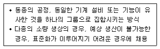
- 고정식 레이아웃
- 혼성식 레이아웃
- 공정중심의 레이아웃
- 제품중심의 레이아웃
(정답률: 83%)
18. 다음 중 호텔의 성격상 연면적에 대한 숙박면적의 비가 가장 큰 것은?
- 리죠트 호텔
- 커머셜 호텔
- 클럽 하우스
- 레지덴셜 호텔
(정답률: 86%)
19. 병원의 간호사 대기소에 관한 설명으로 옳지 않은 것은?
- 병실군의 한쪽 끝에 위치시켜 복도의 상황을 쉽게 알 수 있도록 한다.
- 간호사 대기소에서 병실군까지 보행하는 거리를 24m 이내가 되도록 한다.
- 1개의 간호사 대기소에서 관리할 수 있는 병상수는 30~40개 이하로 한다.
- 계단이나 엘리베이터홀 등에 가능한 안 인접시켜 외부인의 출입을 감시할 수 있도록 한다.
(정답률: 73%)
20. 도서관 출납시스템에 관한 설명으로 옳지 않은 것은?
- 폐가식은 대규모 도서관에 적합한 유형이다.
- 반개가식은 새로 출간된 신간 서적 안내에 채용된다.
- 안전개가식은 서가 열람이 가능하여 도서를 직접 뽑을 수 있다.
- 자유개가식은 이용자가 자유롭게 도서를 꺼낼 수 있으나 열람석으로 가기 전에 관원에게 체크를 받는 형식이다.
(정답률: 82%)
2과목: 건축시공
21. 블록조 벽체에 와이어 메시를 가로줄눈에 묻어 쌓기도 하는데 이에 관한 설명 중 틀린 것은?
- 전단작용에 대한 보강이다.
- 수직하중을 분산시키는데 유리하다.
- 블록과 모르타르의 부착을 좋게 하기 위한 것이다.
- 교차부의 균열을 방지하는데 유리하다.
(정답률: 77%)
22. 사질토의 경우 표준관입시험의 타격횟수 N이 50 이면 이 지반의 상태(모래의 상대밀도)는?
- 몹시 느슨하다.
- 느슨하다.
- 보통이다.
- 다진 상태이다.
(정답률: 73%)
23. 철판과 철판이 겹치는 부분 등을 용접하는 것으로 모재에 개선 등의 사전 가공을 하지 않고 가능한 용접은?
- 홍용접
- 가스압점
- 맞댐용접
- 모살용접
(정답률: 56%)
24. 웰포인트(Well point)공법에 관한 설명 중 틀린 것은?
- 인접 대지에서 지하수위 저하로 우물 고갈의 우려가 있다.
- 투수성이 비교적 낮은 사질실트층까지도 강제배수가 가능하다.
- 압밀침하가 발생하지 않아 주변 대지, 도로 등위 균열 발생 위험이 없다.
- 흙의 안전성을 대폭 향상시킨다.
(정답률: 78%)
25. 프리패브 건축, 커튼월 공법에 따른 건축물에서 각 부분의 접합부 특히 스틸 새시의 부위틈새 및 균열부 보수 등에 많이 이용되는 방수 공법은?
- 아스팔트 방수
- 시트 방수
- 도막방수
- 실링재 방수
(정답률: 72%)
26. 철근콘크리트 공사에 사용되는 거푸집 중 갱폼(Gang Form)의 특징으로 틀린 것은?
- 기능공의 기능도에 따라 시공 정밀도가 크게 좌우된다.
- 대형장비가 필요하다.
- 초기 투자비가 과다하다.
- 거푸집의 대형화로 이음부위가 감소한다.
(정답률: 76%)
27. 건축시공 계약제도 중 직영제도(Direct management system)에 관한 사항 중 틀린 것은?
- 공사내용 및 시공과정이 단순할 때 많이 채용된다.
- 확실성 있는 공사를 할 수 있다.
- 입찰 및 계약의 번잡한 수속을 피할 수 있다.
- 공사비의 절감과 공기 단축이 용이한 제도이다.
(정답률: 72%)
28. 수밀콘크리트의 재료 및 시공에 관한 설명 중 틀린 것은?
- 수영장, 지하실 등 압력수가 작용하는 구조물에 시공하는 콘크리트이다.
- 골재는 입도분포가 고르고 흡수성이 작고 밀도가 큰 것을 사용한다.
- 콘크리트내의 기포는 수밀성을 저하시키므로 AE제를 사용하지 않는다.
- 콘크리트의 다짐을 충분히 하며 가급적 이어치기 하지 않는다.
(정답률: 76%)
29. 다음 그림과 같은 줄기초파기의 파낸 토량은 얼마인가? (단, 토량환산계수 L=1.2 임)
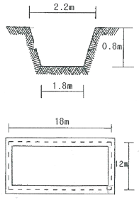
- 96 m3
- 115.2 m3
- 130.7 m3
- 145.9 m3
(정답률: 55%)
30. QC(Quality Control) 활동의 도구가 아닌 것은?
- 기능 계통도
- 산점도
- 히스토그램
- 특정요인도
(정답률: 82%)
31. 콘크리트 중 공기량의 변화에 관한 설명으로 옳은 것은?
- AE제의 혼입량이 증가하면 공기량도 증가한다.
- 시멘트 분말도 및 단위시멘트량이 증가하면 공기량은 증가한다.
- 잔골재 중의 0.15 ~ 0.3mm의 골재가 많으면 공기량은 감소한다.
- 콘크리트의 온도가 높으면 공기량은 증가한다.
(정답률: 54%)
32. 콘크리트 공사에서 콘크리트의 압축강도를 시험하지 않을 경우 거푸집널의 해체시기로 옳은 것은? (단, 조강 포틀랜드 시멘트를 사용한 기둥으로서 평균 기온이 20℃ 이상인 경우)
- 1일 이상
- 2일 이상
- 3일 이상
- 4일 이상
(정답률: 59%)
33. 벽돌벽의 균열 원인과 가장 관계가 먼 것은?
- 기초의 부동침하
- 내력벽의 불균형 배치
- 상하 개구부의 수직선상 배치
- 벽돌 및 모르타르의 강도 부족과 신축성
(정답률: 70%)
34. 포틀랜드시멘트 화학성분 중 1일 이내 수화를 지배하며 응결이 가장 빠른 것은?
- 알루민산 3석회
- 알루민산철 4석회
- 규산3석회
- 규산2석회
(정답률: 75%)
35. 다음 기술 내용 중 열교(Thermak Bridge)와 관련 없는 것은?
- 외벽, 바닥 및 지붕에서 단열이 연속되지 않는 부분이 있을 때 발생한다.
- 벽체와 지붕 또는 바닥과의 접합부위에서 발생한다.
- 열교발생으로 인한 피해는 표면결로 발생이 있다.
- 열교방지를 위해서는 외단열 시공을 하여서는 안된다.
(정답률: 81%)
36. 건축공사에서 활용되는 견적방법 중 가장 정확한 공사비의 산출이 가능한 견적방법은?
- 명세견적
- 개산견적
- 입찰견적
- 실행견적
(정답률: 83%)
37. 콘크리트의 시공연도에 영향을 주는 요인에 대한 설명으로 틀린 것은?
- 포졸란이나 플라이애시 등을 사용하면 시공연도가 증가한다.
- 굵은골재 사용 시 쇄석을 사용하면 시공연도가 증가한다.
- 풍화된 시멘트를 사용하면 시공연도가 감소한다.
- 비빔시간이 과도하면 시공연도가 감소한다.
(정답률: 67%)
38. 벽돌공사 중 창대쌓기에서 창대 벽돌은 공사시방에 정한바가 없을 때에는 그 윗면을 몇 도의 경사로 옆세워 쌓는가?
- 10°
- 15°
- 20°
- 25°
(정답률: 79%)
39. 각 부재에 대한 콘크리트량 산출방법으로서 틀린 것은?
- 기둥 : 기둥 단면적 × 슬래브 두께를 포함한 층 높이
- 계단 : 길이 × 평균 두께 × 계단폭
- 보 : 보폭 × 바닥판 두께를 뺀 보충 × 내부유효길이
- 연속기초 : 단면적 × 중심 연장길이
(정답률: 61%)
40. 건축공사에서 각 공종별 공사계획의 특성으로 틀린 것은?
- 준비기간이란 공사계약일로부터 규준틀 설치, 기초파기등의 직접 공사가 착수될 때까지의 기간을 말한다.
- 기초공사는 시공 중 돌발적인 사태가 발생하는 경우가 많고, 지층이 예상과 달라 일정계획상 차질을 빚을 수 있다.
- 골조공사는 공기단축을 위하여 긴급공사가 불가능하다.
- 마감공사는 방수, 미장, 타일, 도장 등 수많은 공종이 관련되고 설비공사와도 병행된다.
(정답률: 67%)
3과목: 건축구조
41. 그림과 같은 구조물에 있어 AB 부재의 재단모멘트 MAB는?
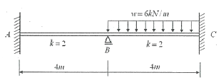
- 0.5kNㆍm
- 1kNㆍm
- 1.5kNㆍm
- 2kNㆍm
(정답률: 53%)
42. 그림과 같은 T자형 단면에서 x축으로부터 단면의 중심 0점까지의 거리
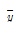
는?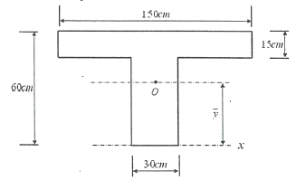
- 15cm
- 30cm
- 37.5cm
- 41.25cm
(정답률: 45%)
43. 모살용접에서 접합부의 얇은 쪽 모재 두께가 13mm일 경우 모상용접의 최소 사이즈는 얼마인가? (단, KBC2009기준)
- 3mm
- 5mm
- 6mm
- 8mm
(정답률: 55%)
44. 다음 그림은 강도설계법에서 단근 직사각형보의 응력도를 나타낸 것이다. 응력중심간 거리(d - a/2)로 옳은 것은? (단, fck =21MPa, fy=300MPa, b=300mm, d=540mm, As=1161mm2)
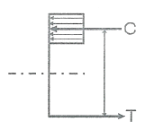
- 524.4mm
- 507.5mm
- 486.8mm
- 472.4mm
(정답률: 60%)
45. 다음 부정정 구조물의 A단 수직반력은?
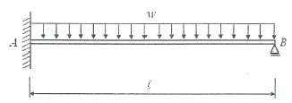
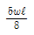
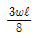
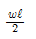
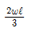
(정답률: 53%)
46. 단면이 b=350mm, h=700mm인 장방형 보의 균열모멘트(Mcr)는 얼마인가? (단, 보의 휨파괴 강도 fr=3MPa)
- 85.75kNㆍm
- 95.75kNㆍm
- 1⑤.75kNㆍm
- 115.75kNㆍm
(정답률: 49%)
47. 그림과 같이 양단이 회전단인 부재의 좌굴측에 대한 세장비는?
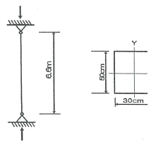
- 76.21
- 84.28
- 94.64
- 103.77
(정답률: 55%)
48. 등가정적해석법에 의한 건축물의 내진설계 시 고려해야 할 사항이 아닌 것은?
- 지역계수
- 지반종류
- 노풍도 계수
- 반응수정계수
(정답률: 71%)
49. 철근콘크리트의 보강철근에 대한 설명으로 틀린 것은?
- 보강철근으로 보강하지 않은 콘크리트는 인장강도가 낮아서 취성(brittle)거동을 한다.
- 보강철근은 콘크리트의 크리프를 감소시키고 균열의 폭을 최소화시킨다.
- 이형철근은 원형강봉의 표면에 둘기를 만들어 철근과 콘크리트의 부착력을 최대가 되도록 한 것이다.
- KS에서 철근의 번호는 inch단위의 공칭지름을 8로 나눈값을 의미한다.
(정답률: 58%)
50. 그림과 같이 양단이 고정된 강재 부재에 온도가 △T=30℃ 증가될 때 이 부재에 걸리는 압축응력은 얼마인가? (단, 강재의 탄성계수 Es=2.0×105MPa, 부재 단면적은 5000mm2, 선팽창 계수α=1.2×10-5/℃ 이다.)
- 25MPa
- 48MPa
- 64MPa
- 72MPa
(정답률: 45%)
51. 보의 길이가 같은 캔틸레버보에서 작용하는 집중하중의 크기가 P1 = P2일 때, 보의 단면이 그림과 같다면 최대처짐 y1 : y2의 비는?
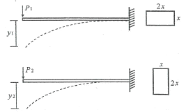
- 2 : 1
- 4 : 1
- 8 : 1
- 16 : 1
(정답률: 54%)
52. 지반침하의 원인에 해당하지 않는 것은?
- 지하수의 지나친 양수
- 매립지반의 압축
- 지반의 수평지지력의 과대
- 지반 굴착에 의한 지반변위
(정답률: 67%)
53. 벽돌구조에 대한 설명으로 틀린 것은?
- 석구조 및 블록구조와 함께 조적식 구조의 일종이다.
- 고층건물이나 대규모 건물에 적합하다.
- 내화, 내구적이다.
- 풍압력, 지진력 등에 약하다.
(정답률: 81%)
54. 철근 콘크리트 단순보에서 순간탄성처짐이 0.9mm 이었다면 1년 뒤 이 부재의 총 처짐량을 구하면? (단, 시간경과계수 ξ=1.4, 압축철근비 ρ′=0.01071)
- 1.52mm
- 1.72mm
- 1.92mm
- 2.12mm
(정답률: 55%)
55. 그림과 같은 모살용접의 유효길이는?
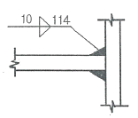
- 1.0cm
- 9.4cm
- 10.7cm
- 11.4cm
(정답률: 67%)
56. 그림과 같은 ㄷ형강(Channel)에서 전단중심(剪斷中心)의 대략적인 위치는?
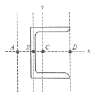
- A점
- B점
- C점
- D점
(정답률: 74%)
57. 강도설계법에서 그림과 같은 띠철근을 가진 기둥의 설계 축하중 øPn은 약 얼마인가? (단, fy=400MPa, fck=21MPa, 강도감소계수 ø=0.65, 주근 : 8-D22(Ast=3096mm2), 띠철근 : D10@300, 보조띠철근 : D10@900)
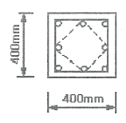
- 2300kN
- 2200kN
- 2100kN
- 2000kN
(정답률: 61%)
58. 다음 구조물의 판별로 옳은 것은?
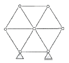
- 불안전 구조물
- 정정 구조물
- 1차 부정정구조물
- 2차 부정정구조물
(정답률: 58%)
59. 다음 그림과 같은 단순보에서 부재 길이가 2배로 증가할 때 보의 중앙점 최대 처짐은 몇 배로 증가되는가?
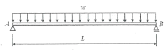
- 2배
- 4배
- 8배
- 16배
(정답률: 59%)
60. 다음 그림과 같은 내민보에서 횜모멘트가 0이 되는 두개의 반곡점 위치를 구하면? (단, A점으로부터의 거리)
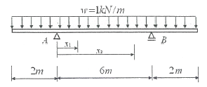
- x1=0.765m, x2=5.235m
- x1=0.785m, x2=5.215m
- x1=0.8⑤m, x2=5.195m
- x1=0.825m, x2=5.175m
(정답률: 44%)
4과목: 건축설비
61. 표면결로의 방지대책으로 옳지 않은 것은?
- 실내에서 발생하는 수증기를 억제한다.
- 환기에 의해 실내 절대습도를 상승시킨다.
- 단열강화에 의해 실내측 표면온도를 상승시킨다.
- 직접가열에 의해 실내측 표면온도를 상승시킨다.
(정답률: 58%)
62. 급수방식 중 수도직결방식에서 수도 본관의 압력은 다음의 식을 만족하여야 한다. 다음 식의 P1, P2, P3의 구성에 속하지 않는 것은? (단, P는 수도 본관이 압력이다.)
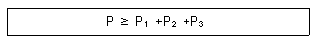
- 제일 높은 수도꼭지까지의 높이
- 제일 높은 수도꼭지까지의 배관길이
- 제일 높은 수도꼭지까지의 관마찰손실
- 제일 높은 수도꼭지에서 필요로 하는 압력
(정답률: 54%)
63. 가스사용시설의 가스계량기에 관한 설명으로 옳지 않은 것은?
- 공동주택의 경우 가스계량기는 일반적으로 대피공간이나 주방에 설치된다.
- 가스계량기와 전기계량기와의 거리는 60cm 이상 유지하여야 한다.
- 가스계량기와 전기개폐기와의 거리는 60cm 이상 유지하여야 한다.
- 가스계량기와 화기(그 시설 안에서 사용하는 자체화기는 제외) 사이에 유지하여야 하는 거리는 2m 이상이어야 한다.
(정답률: 64%)
64. 변전실에 관한 설명으로 옳지 않은 것은?
- 건축물의 최하층에 설치하는 것이 원칙이다.
- 용량의 증설에 대비한 면적을 확보할 수 있는 장소로 한다.
- 사용부하의 중심에 가깝고, 간선의 배선이 용이한 곳으로 한다.
- 변전실의 높이는 바닥 트렌치 및 무근 콘크리트 설치 여부 등을 고려한 유효높이로 한다.
(정답률: 66%)
65. 수질과 관련된 용어 중 부유물질로서 오수 중에 현탁되어 있는 물질을 의미하는 것은?
- BOD
- COD
- SS
- 염소이온
(정답률: 60%)
66. 광속이 2000[lm]인 백열전구로부터 2[m] 떨어진 책상에서 조도를 측정하였더니 200[lx]이었다. 이 책상을 백열전구로부터 4[m] 떨어진 곳에 놓고 측정하였을 때 조도는?
- 50[lx]
- 100[lx]
- 150[lx]
- 200[lx]
(정답률: 80%)
67. 220[V], 200[W] 전열기를 110[V]에서 사용하였을 경우 소비전력은?
- 50[W]
- 100[W]
- 200[W]
- 400[W]
(정답률: 46%)
68. 피뢰설비에서 수뢰부시스템의 설치시 사용되는 보호범위 산정방식에 속하지 않는 것은?
- 메시법
- 면적법
- 보호각법
- 회전구체법
(정답률: 62%)
69. 900명을 수용하는 극장에서 실내 CO2량을 0.1%로 유지하기 위해 필요한 환기량은? (단, 외기 CO2량은 0.04%, 1인당 CO2 토출량은 18L/h 이다.)
- 27000 m3/h
- 30000 m3/h
- 60000 m3/h
- 66000 m3/h
(정답률: 63%)
70. 카(car)가 최상층이나 최하층에서 정상 운행위치를 벗어나 그 이상으로 운행하는 것을 방지하는 엘리베이터 안전 장치는?
- 완충기
- 가이드 레일
- 리미트 스위치
- 카운터 웨이트
(정답률: 81%)
71. 증기난방에 관한 설명으로 옳지 않은 것은?
- 계통별 용량제어가 곤란하다.
- 응축수 환수관 내에 부식이 발생하기 쉽다.
- 방열기를 바닥에 설치하므로 복사난방에 비해 실내바닥의 유효면적이 줄어든다.
- 온수난방에 비해 예열시간이 길어서 충분한 난방감을 느끼는데 시간이 걸린다.
(정답률: 75%)
72. 급탕배관 계통에서 총손실열량이 30000W이고 급탕온도가 80℃, 반탕온도가 70℃라면 순환수량은? (단, 물의 비열은 4.2kJ/kgㆍK, 물의 밀도는 1kg/L 이다.)
- 약 43 L/min
- 약 56 L/min
- 약 66 L/min
- 약 72 L/min
(정답률: 35%)
73. 수송설비에 사용되는 밀도율에 관한 설명으로 옳지 않은 것은?
- 건물 내 수송설비에 의한 서비스 등급을 판정하는데 사용된다.
- 밀도율이 높을수록 서비스 수준이 양호하다는 것을 나타낸다.
- 백화점과 같이 승객의 서비스를 주목적으로 하는 건축물에 사용된다.
- 1시간의 수송능력에 대한 2층 이상의 유효바닥면적의 비율로 산정한다.
(정답률: 65%)
74. 2중효용 흡수식 냉동기에 관한 설명으로 옳은 것은?
- 냉매로서 LiBr 수용액을 사용한다.
- LiBr 수용액의 농축을 위하여 증발기를 사용한다.
- 발생기, 압축기, 흡수기, 증발기로 구성되어 있다.
- 발생기는 저온발생기와 고온발생기로 구성되어 있다.
(정답률: 42%)
75. 배수 트랩에 관한 설명으로 옳지 않은 것은?
- 내부 치수가 동일한 S트랩은 사용하지 않는 것이 좋다.
- 하나의 배수관에 직렬로 2개 이상의 트랩을 설치하지 않는다.
- 수봉식 트랩은 중력식 배수방식에서 하수가스 침입방지 장치로서 안전하고 신뢰성이 높다.
- 유수의 힘으로 가동부분이 열리고 유수가 끝나면 자동으로 닫히게 되는 구조의 것이 좋다.
(정답률: 49%)
76. 공기조화방식 중 단일덕트 변풍량방식에 관한 설명으로 옳지 않은 것은?
- 전공기방식의 특성이 있다.
- 각 실이나 존의 온도를 개별제어할 수 있다.
- 단일덕트 정풍량방식보다 설비비가 적게 든다.
- 실내부하가 적어지면 송풍량을 줄일 수 있으므로 에너지 절감효과가 크다.
(정답률: 64%)
77. 전력용 변압기 용량의 산정식으로 옳은 것은?
- 부하설비용량×부등률/부하율
- 부하설비용량×부하율/부등률
- 부하설비용량×수용률/부등률
- 부하설비용량×부등률/수용률
(정답률: 50%)
78. 공조부하 계산시 현열과 잠열이 동시에 발생하는 것은?
- 인체의 발생열량
- 벽체로부터의 취득열량
- 유리로부터의 취득열량
- 덕트로부터의 취득열량
(정답률: 74%)
79. 스프링클러 설치장소가 아파트인 경우, 스프링클러헤드의 기준개수는? (단, 폐쇄형 스프링클러헤드를 사용하는 경우)
- 10개
- 20개
- 30개
- 40개
(정답률: 69%)
80. 직접조명방식에 관한 설명으로 옳은 것은?
- 조명률이 크다.
- 실내면 반사율의 영향이 크다.
- 분위기를 중요시 하는 조명에 적합하다.
- 발산광속 중 상향광속이 90~100%, 하향광속이 0~10% 정도이다.
(정답률: 67%)
5과목: 건축법규
81. 주차장법령상 기계식주차장의 세분에 속하지 않는 것은?
- 지하식
- 지평식
- 건축물식
- 공작물식
(정답률: 73%)
82. 다음은 주차장 수급 실태 조사의 조사구역에 관한 설명이다. ( )안에 알맞은 것은?
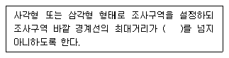
- 100m
- 200m
- 300m
- 400m
(정답률: 74%)
83. 건축물에 설치하는 피난안전구역의 구조 및 설비에 관한 기준 내용으로 옳지 않은 것은?
- 피난안전구역의 높이는 1.8m 이상일 것
- 피난안전구역의 내부마감재료는 불연재료로 설치할 것
- 비상용 승강기는 피난안전구역에서 승하차 할 수 있는 구조로 설치할 것
- 건축물의 내부에서 피난안전구역으로 통하는 계단은 특별피난계단의 구조로 설치할 것
(정답률: 78%)
84. 저층주택을 중심으로 편리한 주거환경을 조성하기 위하여 주거지역을 세분화하여 지정한 지역은?
- 준주거지역
- 제1종 일반주거지역
- 제2종 일반주거지역
- 제3종 일반주거지역
(정답률: 74%)
85. 국토의 계획 및 이용에 관한 법령상 아파트를 건축할 수 있는 지역은?
- 자연녹지지역
- 제1종 전용주거지역
- 제2종 전용주거지역
- 제1종 일반주거지역
(정답률: 76%)
86. 건축물의 내부에 설치하는 피난계단의 구조에 관한 기준 내용으로 옳지 않은 것은?
- 계단의 유효너비는 0.9m 이상으로 할 것
- 계단실의 실내에 접하는 부분의 마감은 불연재료로 할 것
- 계단은 내화구조로 하고 피난층 또는 지상까지 직접 연결되도록 할 것
- 건축물의 내부에서 계단실로 통하는 출입구의 유효너비는 0.9m 이상으로 할 것
(정답률: 64%)
87. 각 층의 바닥면적이 5000m2이고, 각 층의 거실면적이 3000m2인 14층 숙박시설에 설치하여야 하는 승용승강기의 최소 대수는? (단, 24인승 승용승강기를 설치하는 경우)(오류 신고가 접수된 문제입니다. 반드시 정답과 해설을 확인하시기 바랍니다.)
- 6대
- 7대
- 12대
- 13대
(정답률: 60%)
88. 국토의 계획 및 이용에 관한 법령에 따른 기반시설 중 도로의 세분에 속하지 않는 것은?
- 고속도로
- 일반도로
- 고가도로
- 보행자전용도로
(정답률: 68%)
89. 다음은 건축법령상 증축의 정의이다. ( )안에 포함되지 않는 것은?
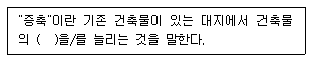
- 층수
- 높이
- 연면적
- 대지면적
(정답률: 60%)
90. 다음은 건축법령상 다세대주택의 정의이다. ( )안에 알맞은 것은?
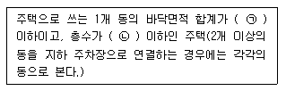
- ㉠ 330m2, ㉡ 3개층
- ㉠ 330m2, ㉡ 4개층
- ㉠ 660m2, ㉡ 3개층
- ㉠ 660m2, ㉡ 4개층
(정답률: 66%)
91. 공작물을 축조할 때 특별자치도지사 또는 시장ㆍ군수ㆍ구청장에세 신고를 하여야 하는 대상 공작물 기준으로 옳지 않은 것은?
- 높이 4m를 넘는 광고판
- 높이 6m를 넘는 기념탑
- 높이 8m를 넘는 고가수조
- 바닥면적 20m2를 넘는 지하대피호
(정답률: 59%)
92. 지방건축위원회의 심의사항에 속하지 않는 것은?
- 건축선의 지정에 관한 사항
- 층수가 16층인 건축물의 건축에 관한 사항
- 건축법에 따른 표준설계도서의 인정에 관한 사항
- 판매시설의 용도로 쓰는 바닥면적의 합계가 5000m2인 건축물의 건축에 관한 사항
(정답률: 43%)
93. 건축신고 대상건축물로서 착공신고를 할 때 토지굴착 및 옹벽도 중 흙막이 구조도면을 첨부하여야 하는 건축물은?
- 층수가 6층 이상인 건축물
- 지하 2층 이상의 지하층을 설치하는 건축물
- 너비 12m 이상인 도로변에 지하층을 설치하는 건축물
- 인접대지경계선으로부터 2m 이내에 지하층을 설치하는 건축물
(정답률: 47%)
94. 다음의 용도변경 중 허가대상에 속하지 않는 것은?
- 영업시설군에서 주거업무시설군으로 용도변경
- 교육 및 복지시설군에서 영업시설군으로 용도변경
- 주거업무시설군에서 문화 및 집회시설군으로 용도변경
- 교육 및 복지시설군에서 문화 및 집회시설군으로 용도
(정답률: 66%)
95. 건축물의 설비기준 등에 관한 규칙에 따라 피뢰설비를 설치하여야 하는 건축물의 높이 기준은?
- 10m
- 20m
- 21m
- 31m
(정답률: 42%)
96. 공동주택 중 아파트로서 대피공간을 설치하여야 하는 경우, 대피공간의 바닥면적은 최소 얼마 이상이어야 하는가?(단, 입접 세대와 공동으로 설치하는 경우)
- 1m2
- 2m2
- 3m2
- 4m2
(정답률: 58%)
97. 건축 분야의 건축사보 한 명 이상을 공사기간 동안 공사현장에서 감리업무를 수행하게 하여야 하는 건축공사의 바닥면적 기준은? (단, 축사 또는 작물 재배사의 건축공사는 제외)
- 바닥면적의 합계가 1000m2 이상인 건축공사
- 바닥면적의 합계가 2000m2 이상인 건축공사
- 바닥면적의 합계가 5000m2 이상인 건축공사
- 바닥면적의 합계가 10000m2 이상인 건축공사
(정답률: 68%)
98. 부설주차장의 설치대상 시설물 종류와 설치기준의 연결이 옳은 것은?
- 판매시설 - 시설면적 100m2당 1대
- 위락시설 - 시설면적 150m2당 1대
- 종교시설 - 시설면적 200m2당 1대
- 숙박시설 - 시설면적 200m2당 1대
(정답률: 64%)
99. 태양열을 주된 에너지원으로 이용하는 주택의 건축면적 산정시 기준이 되는 것은?
- 건축물 외벽의 외곽선
- 전체 외벽두께의 중심선
- 건축물의 외벽 중 내측 내력벽의 중심선
- 건축물의 외벽 중 외측 내력벽의 중심선
(정답률: 81%)
100. 미관지구의 위치ㆍ환경 그 밖의 특성에 따른 미관의 유지에 필요한 범위안에서 도시ㆍ군계획조례로 정하는 사항에 속하지 않는 것은?(관련 규정 개정전 문제로 여기서는 기존 정답인 1번을 누르면 정답 처리됩니다. 자세한 내용은 해설을 참고하세요.)
- 건폐율 및 용적률
- 부속건축물의 규모
- 건축물의 높이 및 규모
- 담장 및 대문의 형태 및 색채
(정답률: 71%)
"독립성과 쾌적감 확보에 유리하다."는 이유는 개방식 배치는 벽으로 구분되는 개별적인 공간이 없기 때문에 직원들 간의 소통이 원활해지고, 공간이 밝고 쾌적해 보이기 때문입니다. 또한, 공간을 효율적으로 활용할 수 있어서 작은 공간에서도 많은 인원이 일할 수 있어서 독립성과 쾌적감을 확보할 수 있습니다.